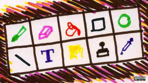
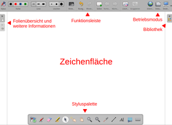
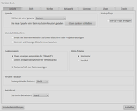

Open-Sankore
Dieser Artikel wurde für die folgenden Ubuntu-Versionen getestet:
Ubuntu 14.04 Trusty Tahr
Zum Verständnis dieses Artikels sind folgende Seiten hilfreich:
Open-Sankore 
 ist ein freies, plattformübergreifendes Programm zur Nutzung interaktiver Whiteboards (IWB), das ursprünglich in der Schweiz entwickelt wurde. Neben Linux steht es auch für Windows und Mac OS X zur Verfügung. Im Gegensatz zu den Programmen kommerzieller Whiteboard-Hersteller ist es nicht auf den Einsatz in Kombination mit bestimmter Hardware beschränkt. Als Lizenz dient die GPL3.
ist ein freies, plattformübergreifendes Programm zur Nutzung interaktiver Whiteboards (IWB), das ursprünglich in der Schweiz entwickelt wurde. Neben Linux steht es auch für Windows und Mac OS X zur Verfügung. Im Gegensatz zu den Programmen kommerzieller Whiteboard-Hersteller ist es nicht auf den Einsatz in Kombination mit bestimmter Hardware beschränkt. Als Lizenz dient die GPL3.
Merkmale: 
Zeichenwerkzeuge (Stift, Radierer, Textmarker)
Formen (Kreise, Rechtecke, Polygone)
mehrere Ebenen
Objekte können gruppiert werden
virtuelle Tastatur
"Laserpointer"
Desktop-Anzeige mit Kommentarmöglichkeiten
Im- und Export-Werkzeuge
Das Programm ist im Vergleich mit kommerziellen Lösungen zwar weniger umfangreich, was aber nicht unbedingt ein Nachteil sein muss. Die essentiellen Whiteboard-Funktionen sind zu 90% abgedeckt, der Rest ist dem Entwicklungsstand geschuldet. Damit löst die Anwendung ein Problem, das in der Praxis häufiger auftritt: unnötig komplexe Software blockiert die Nutzung und damit die Akzeptanz. Zwar muss auch hier der alltägliche Umgang vorher geübt werden, aber die übersichtliche Anzahl der enthaltenen Funktionen erleichtert das Erlernen deutlich. Darüber hinaus kann die freie Software von jedem Interessierten zum Üben auf dem eigenen Rechner installiert werden (als Voll-, nicht nur als Demo-Version).
Nachteilig ist u.U. die starke Ausrichtung auf den französischen Sprachraum. Zwar ist die Programmoberfläche komplett ins Deutsche übersetzt, aber ein Großteil der Dokumentation liegt bisher nur auf Französisch, teilweise auch auf Englisch vor. Einige deutschsprachige Hinweise und Tipps zur Nutzung sind am Ende des Artikels zu finden.
Seit 2014 gibt es mit OpenBoard eine Abspaltung (Fork), die aktiv weiterentwickelt wird.
Installation¶
 Das Programm nicht in den offiziellen Paketquellen enthalten. Zur Installation muss man daher auf ein Fremdpaket ausweichen.
Das Programm nicht in den offiziellen Paketquellen enthalten. Zur Installation muss man daher auf ein Fremdpaket ausweichen.
Fremdpaket¶
Bisher gibt es keine offizielle Version für Ubuntu 14.04. Daher wird empfohlen, das Fremdpaket, was eigentlich für Ubuntu 12.04 gedacht ist, zur Installation zu nutzen. Die Archivdatei (ca. 50 MiB) kann über die Projektseite  für 32- oder 64-bit-Systeme heruntergeladen werden (die angebotene Registrierung kann übersprungen werden). Vor der Installation muss die Archivdatei mit dem Namen
für 32- oder 64-bit-Systeme heruntergeladen werden (die angebotene Registrierung kann übersprungen werden). Vor der Installation muss die Archivdatei mit dem Namen
Open-Sankore_UBUNTUVERSION_PROGRAMMVERSION_ARCHITEKTUR.zip
zuerst entpackt [1] werden, bevor das im Archiv enthaltene DEB-Paket manuell installiert werden kann [2].
Hinweis!
Fremdpakete können das System gefährden.
Nach der Installation befinden sich die Programmdateien im Ordner /usr/local/Open-Sankore-VERSION/.
Allerdings können speziell bei 64-bit-Systemen Probleme auftreten, die sich aber lösen lassen: Mediaplayer Plugin stürzt ab 
Aus dem Quelltext¶
Weitere Hinweise, wie man das Programm selbst aus dem Quelltext kompilieren kann, sind im französischen Ubuntu-Wiki zu finden.
Verwendung¶
Bei Ubuntu-Varianten mit einem Anwendungsmenü erfolgt der Programmstart über "Bildung -> Open-Sankore (VERSION)" [3]. Die Anwendung startet automatisch im Vollbildmodus. Sollte es erforderlich sein, zwischen dem Programm und anderen zu wechseln, benutzt man entweder den Desktop-Modus oder die Tasten-Kombination Alt + Tab ⇆ .
|  |
| Board-Modus mit teilweise ausgeblendeten Werkzeugleisten |
Wie bei Präsentationsprogrammen üblich steht eine Folie als Zeichenfläche im Mittelpunkt. An den Fensterrändern befinden sich eine Art Menüleiste und weitere Werkzeugleisten, die entweder frei beweglich sind oder bei Nichtgebrauch minimiert werden können. Die folgende Beschreibung bezieht sich die Grundeinstellung:
oben: Funktionsleiste, besteht aus einem linken und einem rechten (kleineren) Abschnitt
links: Stiftfarbe und -breite, Radierer, Hintergrund, usw.
rechts: Wechsel des Betriebsmodus (Internet, Folienverwaltung, Desktop, Einstellungen, etc.)
rechts: Bibliothek
unten: Styluspalette
links: Folienübersicht und -beschreibung
Die Funktion zum Beenden des Programms ist etwas versteckt. Schneller geht es mit Alt + F4 .
Derzeit ist nur eine englische und eine französische Hilfe vorhanden. Diese kann in einem beliebigen Webbrowser geöffnet werden:
/usr/local/Open-Sankore-VERSION/etc/Tutorial/tutorial_en/index.html
/usr/local/Open-Sankore-VERSION/etc/Tutorial/tutorial_fr/index.html
Teilweise verweisen die Anleitungen allerdings nur auf die Internetseite Planete Sankore , die mit dem Ziel gegründet wurde, als Austauschplattform für freie Unterrichtsinhalte zu dienen.
Bibliothek¶
Die Bibliothek enthält in der Basisinstallation bereits etliche Beispiele, die einfach via Drag'n'Drop auf die Zeichenfläche übernommen werden können. Stark vereinfacht kann man sie mit einer Clipart-Sammlung vergleichen. Eine Vorsortierung in Kategorien erleichtert die Übersicht, ansonsten hilft ein Suchfeld am unteren Rand weiter.
Allerdings trifft die Bezeichnung "Clipart" nicht wirklich zu, da auch Multimedia-Elemente und fertige Anwendungen enthalten sind. So gibt es beispielsweise ein Lineal, einen Zirkel ("Kompass") und einen Winkelmesser, während man ein Geodreieck erst nachrüsten muss. In der Rubrik "Formen" sind dagegen die vom Artikelautor lange vermissten Pfeilsymbole enthalten.
Die Rubriken "Animationen" (Flash), "Interaktivitäten" und "Anwendungen" laden zum Stöbern und Ausprobieren ein. Für Fortgeschrittene interessant ist die Umsetzung nur mittels HTML, CSS, JavaScript und u.U. auch Flash. Hier wird ein Blick in den Ordner /usr/local/Open-Sankore-VERSION/library/ empfohlen.
Neue Elemente hinzufügen¶
Eigene Beispiele, konkret Grafiken, Audiodateien oder Videos, können in die automatisch beim Programmstart angelegten Ordner im Homeverzeichnis kopiert werden:
~/Bilder/Sankore/
~/Musik/Sankore/
~/Videos/Sankore/
und tauchen dann innerhalb der Bibliothek unter den entsprechenden Rubriken auf. Alternativ kann man die auch im Desktop-Modus sichtbare Bibliothek aus dem Dateimanager via Drag'n'Drop mit eigenen Inhalten füllen. Da die vorhandene Auswahl an Grafiken relativ eingeschränkt ist, an dieser Stelle noch ein Hinweis auf den Artikel OpenClipart.
Experten-Info:
Theoretisch könnte man die Bibliothek auch erweitern, in dem man Beispieldateien mit Root-Rechten [4] in den Ordner /usr/local/Open-Sankore-VERSION/library/ bzw. dessen Unterordner kopiert. Allerdings ist unbekannt, ob diese Änderungen bei einer Programmaktualisierung erhalten bleiben oder gelöscht werden.
Desktop-Modus¶
Sehr praktisch ist die Möglichkeit, den im Normalfall "hinter" der Anwendung liegenden Desktop anzuzeigen, beispielsweise, um auf bestimmte Funktion hinzuweisen oder diese mit der Funktion "Laserpointer" hervorzuheben. Um diese Funktion sinnvoll nutzen zu können, ist ein aktiver Composite-Manager erforderlich.
In diesem Modus zeigt das Programm nur eine kleine vertikale Leiste am linken Bildschirmrand an (die Bibliothek am rechten Rand sollte minimiert werden). Zurück zu Open-Sankore gelangt man mit dem obersten Symbol.
Es ist auch möglich, die Leiste zu minimieren. Dazu verschiebt man diese an den linken oder rechten Bildschirmrand, wodurch sie auf ein quadratisches Symbol zusammenschrumpft.
Internet-Modus¶
Auch der Modus "Internet" funktioniert prinzipiell wie der Desktop-Modus. Empfohlen wird, den jeweiligen Standard-Browser des Systems zu verwenden, da der integrierte Browser noch in den Kinderschuhen steckt (siehe Einstellungen). In beiden Modi können Ausschnitte oder der komplette Desktop als Grafik in Open-Sankore importiert werden.
Import¶
Neben den eigenen Formaten (siehe Export) können eine Reihe unterschiedlicher Dateiformate importiert werden:
Bilder (ICO, BMP, GIF, JPG, PNG, TIFF, SVG)
Multimedia (Audiodateien, Videos, Flash)
Internetseiten
PDF
Export¶
Sämtliche Folien werden automatisch im Ordner ~/.local/share/data/Sankore/document/ im Homeverzeichnis, sortiert nach Datum und Uhrzeit, gespeichert. Einen klassischen Dialog zum Speichern gibt es nicht – bei jedem Programmstart wird eine neue leere Folie angelegt (automatischer Tafeldienst). Möchte man Folien auf einen anderen Rechner transportieren, müssen diese zwingend exportiert werden. Zur Auswahl stehen folgende Optionen:
"Export in Sankore-Format" - ZIP-komprimierte Archivdatei mit der Endung .ubz, die direkt importiert werden kann
"Export ins Sankore UBX-Format" - Datensicherung (siehe unten)
"Exportieren nach IWB" - ZIP-komprimierte Archivdatei mit der Endung .iwb, die eine einzige XML-Datei enthält. Dieses Format wurde mit dem Ziel geschaffen, einen universellen Austausch zwischen proprietärer Whiteboard-Software zu ermöglichen.
"In PDF-Datei exportieren" - verbreitetes Austauschformat, dass allerdings nicht mehr direkt bearbeitet werden kann
"Dokument im Sankore-Netz veröffentlichen" - direkte Publizierung auf Planete Sankore
möglich (Registrierung erforderlich)
Eine Sonderrolle spielt das Export-Format .ubx. Damit können alle Einzeldokumente gemeinsam in eine einzige Datei gespeichert werden. So kann man schnell eine Sicherung aller vorhandenen Inhalte vornehmen. Dazu innerhalb der Folienverwaltung ("Dokumente") einen der Gliederungspunkte:
"Eigene Dokumente" (Komplettsicherung)
"Umbenannte Dokumente" (nur die nach Datum und Zeit sortierten Dokumente)
"Modelle" (erhaltenswerte Dokumente; Umbenennung via Doppelklick auf den Dokumentnamen)
auswählen bzw. markieren, bevor man in diesem Format speichern kann.
Einstellungen¶
|  |
| Einstellungen |
Open-Sankore besitzt einen umfangreichen Einstellungsdialog. Nicht alle Einstellungen müssen angepasst werden, aber auf folgende Punkte sei hingewiesen:
"Funktionsleiste" - gerade wenn Kinder das Whiteboard nutzen sollen, ist der obere Rand des IWB u.U. schlecht erreichbar. Dann kann die Funktionsleiste unten statt oben positioniert werden.
"Seite mit externem Browser anzeigen" - diese Option aktivieren, um den vorhandenen Standard-Browser für den Internetzugriff zu verwenden und damit die Internetfunktion vernünftig nutzen zu können.
"Software-Update beim Start prüfen" - eine im Unterricht eher störende Funktion ist die automatische Suche nach Programmaktualisierungen. Sie kann daher deaktiviert werden. Da für Ubuntu keine Paketquelle zur automatischen Aktualisierung zur Verfügung steht, sollte eine ältere Version erst deinstalliert werden, bevor eine neue Version installiert wird.
Die Konfiguration wird in der Datei ~/.config/Sankore/Open-Sankore.conf im Homeverzeichnis gespeichert.
Problembehebung¶
Mathematische Formeln¶
Insbesondere Mathematik-Lehrer vermissen bei der Nutzung eines IWBs in der Regel einen Formeleditor. Da über den Desktop-Modus die Nutzung beliebiger Anwendungen möglich ist, kopiert man am einfachsten eine mit einem entsprechenden Programm erstellte Formel und fügt sie als Bild in Open-Sankore ein. Zwar lassen sich Formeln dann nicht mehr nachbearbeiten, aber dieser Weg ist meist schneller als der Aufbau einer eigenen Formel-Bibliothek.
Links¶
Kurztest Open-Sankore
- Videotutorial
Bleistiftradierer
- nützliche Blogbeiträge zur praktischen NutzungLinuxclient: Open-Sankoré
- Tipps zur NetzwerkinstallationActivInspire - kommerzielle Software des ActivBoard-Herstellers Promethean
Quizdidaktik4Whiteboard - Nutzung interaktiver Whiteboards direkt in einem Webbrowser
Interaktive Whiteboards
- im ZUM-Wiki
- Erstellt mit Inyoka
-
 2004 – 2017 ubuntuusers.de • Einige Rechte vorbehalten
2004 – 2017 ubuntuusers.de • Einige Rechte vorbehalten
Lizenz • Kontakt • Datenschutz • Impressum • Serverstatus -
Serverhousing gespendet von